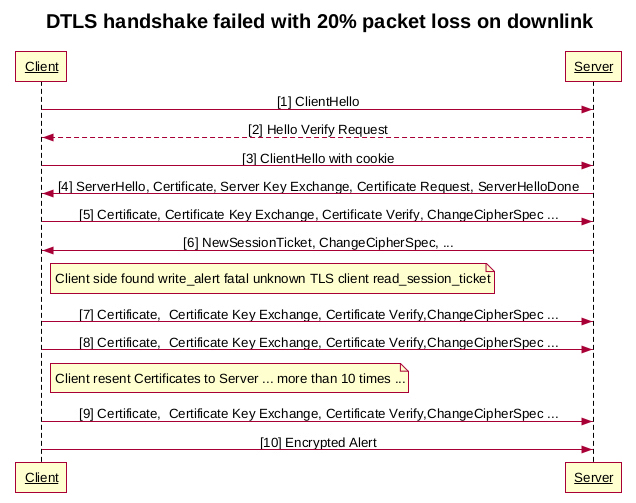
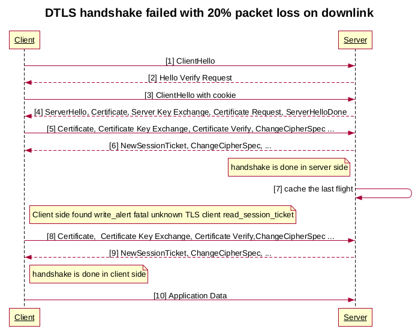

DTLS 握手为什么常失败
Posted on 三 05 7月 2023 in Tech
| Abstract | DTLS 握手为什么常失败 |
|---|---|
| Authors | Walter Fan |
| Category | webrtc note |
| Status | v1.0 |
| Updated | 2023-07-01 |
| License | CC-BY-NC-ND 4.0 |
在做弱网测试的时候, 发现了一个奇怪的问题, 我们分别在上行和下行通道上施加从 5% , 10% 到 20% 的丢包,
当仅在上行通道施加丢包时, 一切运行良好, 我们的 FEC/RTX 功能使得音视频通话依然流畅,
可是在下行通道施加丢包时, 重新连接服务器常常不成功, 时常出现连接失败的情况, 但是机率也不是 100%,
经过 wireshark 抓包发现一个 DTLS handshark 经常会不成功, DTLS v1.2 协议中规定的握手流程如下
Client Server
------ ------
ClientHello --------> Flight 1
<------- HelloVerifyRequest Flight 2
ClientHello --------> Flight 3
ServerHello \
Certificate* \
ServerKeyExchange* Flight 4
CertificateRequest* /
<-------- ServerHelloDone /
Certificate* \
ClientKeyExchange \
CertificateVerify* Flight 5
[ChangeCipherSpec] /
Finished --------> /
[ChangeCipherSpec] \ Flight 6
<-------- Finished /
而我发现的握手不成功的流程如下

很显然, 我在下行通道施加丢包时, 可能会导致 Server 发回给 Client 的 new session ticket 等消息丢失, 可是 Openssl 1.1 在实现时虽然按照协议对握手消息进行了重传, 例如 client 如果没有收到来自 server 的期望的消息, 它就会重传.
Client Server
------ ------
ClientHello ------>
X<-- HelloVerifyRequest
(lost)
[Timer Expires]
ClientHello ------>
(retransmit)
Server 也一样会重传, DTLS 协议定义了一个简单的超时重传的状态机
+-----------+
| PREPARING |
+---> | | <--------------------+
| | | |
| +-----------+ |
| | |
| | Buffer next flight |
| | |
| \|/ |
| +-----------+ |
| | | |
| | SENDING |<------------------+ |
| | | | | Send
| +-----------+ | | HelloRequest
Receive | | | |
next | | Send flight | | or
flight | +--------+ | |
| | | Set retransmit timer | | Receive
| | \|/ | | HelloRequest
| | +-----------+ | | Send
| | | | | | ClientHello
+--)--| WAITING |-------------------+ |
| | | | Timer expires | |
| | +-----------+ | |
| | | | |
| | | | |
| | +------------------------+ |
| | Read retransmit |
Receive | | |
last | | |
flight | | |
| | |
\|/\|/ |
|
+-----------+ |
| | |
| FINISHED | -------------------------------+
| |
+-----------+
| /|\
| |
| |
+---+
Read retransmit
Retransmit last flight
由此分析, 然后查看相关代码, openssl 1.1 的实现中虽然有超时和重传, 可是它忽略了一个地方, 当服务器发送 "new session ticket " 等消息, 也就是最后一个握手 Flight 后, 它就认为握手结束了, Server服务器端不再处理握手消息了, 可是由于丢包, client 没有收到来自 server 的最后一个握手消息, client 会重新发送上一条握手消息, 期待 server 有所响应, 可以 server 并没有理睬它.
知道了原因, 改起来就快了, 我在openssl 调用的上层缓存了 server 发出去的最后一条握手消息, 当 client 在 server 握手流程结束后依然发送握手消息, server 就马上发送回之前缓存的握手消息, 从而完美地解决了这个问题, 新的 Flow 如下

本作品采用知识共享署名-非商业性使用-禁止演绎 4.0 国际许可协议进行许可。